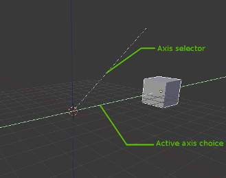
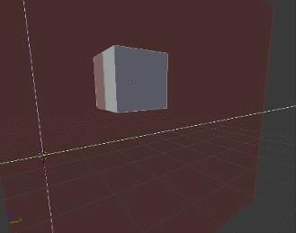

Grab/Move¶
参考
G or combinations for specific Axis constraintIn 物体模式, the grab/move option lets you translate (move) objects. It also lets you translate any elements that make up the object within the 3D space of the active 3D视图. Grab/Move works similarly here as it does in the 节点编辑器, Graph Editor, UV/图像编辑器, Sequencer, etc.
Options and other details will be discussed in their respective sections.
Translation Display.
While Grab/Move is active, the amount of change in the X, Y, and Z co-ordinates is displayed at the bottom left corner of the 3D视图编辑窗口.
There are two ways to Grab/Move in 3D视图:
- Using shortcuts and combinations of shortcuts.
- Using the 变换 Widget helper. This can be toggled from the Translation Widget in the header of the 3DView.
变换 Widget¶
Translation Widget.
In the default installation of Blender, this is the 变换 Widget.
It is active by default. You can use the widget by holding LMB over it and dragging in the 3D视图.
Shortcuts¶
A quicker way to move objects in 3D space is with G.
Pressing G activates “Grab/Move” transformation mode.
The selected object or data then moves freely according to the mouse pointer’s location and camera.
Using this shortcut in combination with specific shortcuts which specify a chosen axis gives you
full control over your transformation.
LMB- Confirm the move, and leave the object or data at its current location on the screen.
MMBConstrain the move to the X, Y or Z axis according to the position of the mouse pointer in the 3D视图. After pressing
G, if theMMBis pressed, a visual option to constrain the translation will be available, showing the three axes in the 3D视图 space. The axis of choice to confirm the operation will depend on the axis about which theMMBis released. At any point during the operation, the chosen axis can be changed by pressingX,Y,Zon the keyboard.Axis-Constraint in action.
RMBorEsc- Cancel the move, and return the object or data to its original location.
Shift+X,Y,ZThis modifying hotkey locks the translation axis, allowing the object to move freely on the two axes that are not locked. For example,
Shift+Xmeans the object will translate on the Y and Z axes while remaining at the same point on the X axis.Shift+X in action.
Alt+G- clears any previous transformation on the object and sets its origin back to the center. This only works in 物体模式.
You can also move an object by clicking and holding RMB on the object to move it.
To confirm the action, press LMB.
Note
This behavior can be changed using Release Confirms in the 用户首选项,
so that a single RMB drag can be used to move and confirm.
Controling Precision¶
In addition to the Axis constraint options listed above, Blender offers options to limit the amount of the transformation in small or predefined steps.
Shift- Slow translation mode. While still in the grab mode i.e. after
Gis pressed, holding downShiftreduces how quickly the object moves and allows extra precision. Ctrl- This activates snapping based on the snapping constraint which has been already set. You may not be able to enable every snapping option in all cases.
Ctrl-Shift- Precise snap. This option will move the object with high precision along with the snapping constraint.
X,Y,Z+ decimal numberThis option limits the transformation to the specified axis and the decimal number specified will be the magnitude of the translation along that axis. This decimal number is displayed at the bottom left corner of the 3D视图编辑窗口 as it is entered.
- Hitting
Backspaceduring number entry and deleting the number removes the numerical specification option but the object will remain constrained to the same axis. - Hitting
/during number entry switches the number being entered to its reciprocal, e.g.2 /results in 0.5 (1/2);2/0results in 0.05 (1/20). - The axis of movement can be changed at any time during translation by typing
X,Y,Z.
- Hitting
Orientations¶
There are five standard orientation references for all transformations. You can find out more about transform orientations here.
Orientation choice menu.
Each mode is a co-ordinate system in which transformations can be carried out. These orientations can be chosen from the pop-up menu to the side of the controls which toggle and select the transformation manipulator widgets.
If you have changed the orientation to something other than Global, you can hotkey your chosen axis of orientation by hitting the relevant axis modifying hotkey twice instead of just once. Hitting the axis modifying hotkey three times reverts back to Global orientation.
Gfollowed byX-XorY-YorZ-Zallows you to translate the object in the object’s Local axis by default, or on an axis of the selected orientation if the transform orientation is not set to Global. This modifying hotkey combination can be followed with numbers as described in the previous section.- The
Gfollowed byShiftandX-XorY-YorZ-Zwill lock the object’s translation on a single Local axis by default, or on an axis of the selected orientation if the transform orientation is not set to Global. Locking one axis means the selected object moves freely on the other two axes.
Numerical Entry Display.
Tip
Moving an object in 物体模式 changes the object’s origin. Moving the object’s vertices/edges/faces in 编辑模式 does not change the object’s origin.